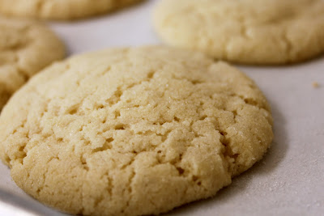

Some awesome recipes. Choose your sin.
Chocolate Chip Cookie Dough Truffles
Ingredients
- 1/2 cup (1 stick) unsalted butter, room temperature
- 1/4 cup granulated sugar
- 1/2 cup packed light brown sugar
- 2 tablespoons milk
- 1/2 teaspoon vanilla
- 1 1/4 cups all purpose flour
- 1/2 teaspoon salt
- 1/2 cup mini chocolate chips
- chocolate candy coating
- popsicle sticks, cut in half (use kitchen scissors to make a clean, smooth cut)
Directions
- In a large bowl, beat butter and sugars with an electric mixer until light and fluffy (about 3 minutes).
- Mix in milk and vanilla.
- Add flour and salt and mix on low until combined.
- Stir in chocolate chips.
- Chill dough in refrigerator for about 30 minutes until firm enough to roll or scoop into 1-inch balls.
- Place rolled balls on a wax paper lined baking sheet and place in the freezer for at least 15 minutes.
- Melt candy coating following instructions on the package. Remove a couple of balls from the freezer at a time and insert the cut stick into the ball. Dip in candy coating and let any excess fall off back into the bowl.
- Add small sprinkles on top and place on wax paper to set. If the chocolate pools at the bottom of the ball, dot the balls on the wax paper until most of it is pulled off the ball and then place it on a clean spot of the wax paper to set.
- Refrigerate in an airtight container for up to a week.
Find more at Bakerella
Oreo Truffles
Ingredients
- 1 lb Oreo cookies (3 sleeves)
- 8 ounces cream cheese, room temperature
- 1/2 teaspoon vanilla extract
- 1 lb milk chocolate
- 1/2 lb white chocolate
Directions
- Using a food processor, grind cookies to a fine powder. With a mixer, blend cookie powder, cream cheese and vanilla extract until thoroughly mixed (there should be no white traces of cream cheese).
- Roll into small balls and place on wax-lined cookie sheet. Refrigerate for 45 minutes.
- Line two cookie sheets with wax paper. In double-boiler, melt milk chocolate. Dip balls and coat thoroughly. With slotted spoon, lift balls out of chocolate and let excess chocolate drip off. Place on wax-paper-lined cookie sheet.
- In separate double boiler, melt white chocolate. Using a fork, drizzle white chocolate over balls. Let cool.
- Store in airtight container, in refrigerator.
- Note: When I am exceedingly lazy (most often the case these days), I forego the chocolate 'dip' and merely roll my truffles into various mixtures - chopped nuts, chocolate sprinkles, vari-coloured candy sprinkles, cocoa powder, chocolate shavings, coloured sugars -- still pretty -- less work.
Find more at Food.com
Sugar Cookies

Ingredients
- 1 1/2 cups butter
- 1 1/2 cups shortening
- 1 1/2 cups white sugar
- 1 1/2 cups confectioners' sugar
- 4 1/2 teaspoons vanilla extract
- 3 eggs
- 6 3/4 cups all-purpose flour
- 1 1/2 teaspoons baking soda
- 1 1/2 teaspoons cream of tartar
- 1/2 teaspoon salt
Instructions
- Cream butter, shortening and sugars until light and fluffy.
- Beat in eggs and vanilla.
- Sift dry ingredients, add to creamed mixture; mix to blend.
- Shape dough into 1 inch balls.
- Dip in regular or colored sugar or decorator sprinkles.
- Place on lightly greased cookie sheet. Flatten slightly with the bottom of a water glass.
- Bake at 375 degrees F (190 degrees C) for 10-12 minutes. *Larger cookies bake at 350 degrees F (175 degrees C) for 15 minutes.
Find more at AllRecipes.com